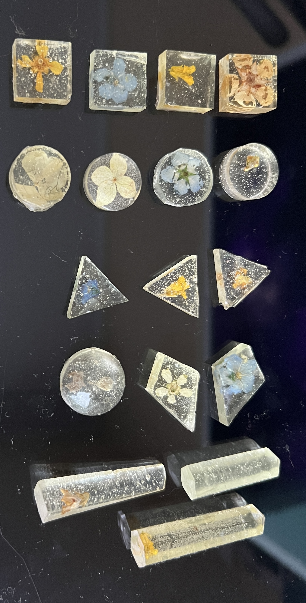
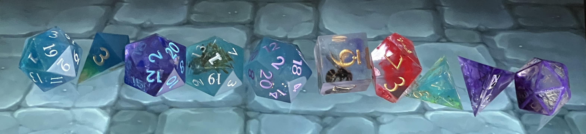
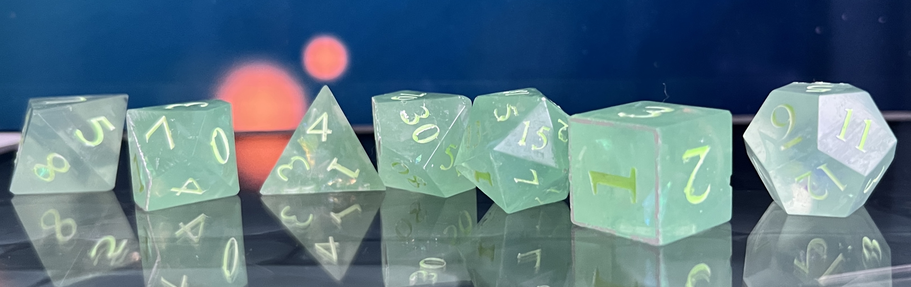

I've been making dice and other things with epoxy resin for a while now, and I wanted to share what works for me. It's been a journey of experimentation, beautiful successes, and even more failures.
My first ever creations from 2021- flowers encased in resin. Full of bubbles and sadness.
My Dice Making Process: What Works for Me
After making many sets of dice, I've developed a process that consistently gives me good results. I work with a two-part epoxy resin system—mixing resin and hardener. I've found that without a pressure pot and vacuum chamber making dice that can be sold is IMPOSSIBLE.
My Essential Materials
- Epoxy Resin Kit - I use this 1:1 crystal-clear resin from AliExpress. It's great quality, doesn't yellow like the resin I bought in Latvia, and it's cheaper than any resin you could find in Latvia.
- Silicone Molds - I have these from AliExpress but they're not great quality. For good quality dice molds, Etsy is recommended. For non capped molds, AliExpress ones work well.
- Digital Scale - I use a kitchen scale but it isn't very precise
- Protective Equipment - Gloves & mask
- Colorants - These transparent resin dyes from AliExpress are pretty and clear, plus glitters and galaxy flakes from Hobbyset. I also bought resin dyes from Hobbyset but they are opaque.
- Heat Gun & lighter - For removing air bubbles
- Mixing Cups & Sticks - Silicone or plastic cups, wooden ice cream sticks
💡 What I've Learned
- Avoid moisture: Humidity can affect your results. Water will ruin everything.
- Mix thoroughly: I mix for at least 5 minutes, scraping the sides and bottom
- Use a heat gun: After pouring, I use and heat gun or lighter to pop surface bubbles, also heat inbetween mixing. Resin work time is shortened but less bubbles.
- Patience during curing: I try to give my dice full 48 hours but I am impatient and do it sooner. Sometimes even 14h which makes the excess resin harder to get off which causes damage to the dice.
- Posca markers are amazing for coloring the numbers.
Showcasing Some Dice Sets
Here are some of the test dice I've made. You can see opaque colors, translucent colors, glitter, plants, a wasp and some more stuff:
Some of my test finished dice.
Resin is not the only material I use for making dice. I also make dice with polymer clay and air dry clay. Those materials are interesting too:
Green dice set. Stuff used: Galaxy flakes, opaque resin dye. Number coloring: Posca marker PC-1M, Glow in the dark paint.

Polymer dice set. Stuff used: Purple and white polymer clay. Number coloring: White nail polish.
To make polymer clay dice, I use the same silicone molds as for resin dice. I press the clay into the molds, freeze them for easier removal, then bake according to the clay's instructions. After baking I painted the numbers with nail polish and scraped off the excess with a boxcutter.

Air dry clay encased in resin set. Stuff used: Broken Air dry clay. Number coloring: Gold poster color.
To make air dry clay dice, I press the clay into the molds, let them dry completely, then smash them, paint with gold color, glue them back together and encase them in resin for durability and a glossy finish. Number coloring is done with gold poster color. Air dry clay was drying for weeks and still wasn't fully dry.
My Creations
Everyone starts somewhere, and looking back at my first attempts is both humbling and encouraging. My earliest pieces weren't perfect, but they represented the beginning of this creative journey.
a pendant with a flower and piece of fabric. One of my first epoxy creations. Full of bubbles and the resin is not mixed very well
a pendant with a flower, glitter and transparent resin color. No bubbles, great finish. This is more recent with the aliexpress resin.
a pendant with a flower, glitter and transparent resin color. No bubbles, great finish. This is more recent with the aliexpress resin. Also has an NFC chip on the back- I keep it on my bag so when people I meet ask for instagram I pull this out and tap it on their phone and it opens my IG
I get my findings for pendants and other jewelry making things from Arta&Co
The Biggest Failures
Boiled resin- i was holding heat gun too close for too long.

Water dripped on top of this one making it white. It dried only after months.
Resin i didnt heat at all.
What I'm Still Learning
Getting into resin is fairly cheap. But once you want to make it more than a hobby it gets expensive- vacuum pots, pressure pots to get rid of all the bubbles is already -500 euros.
If you're thinking about trying resin crafting, my advice is simple: start with small projects. They will look pretty and are hard to mess up if you use good resin. Keychains are the easiest and prettiest.